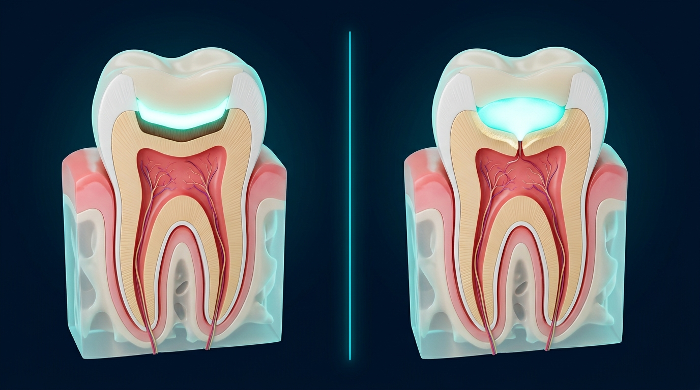

NT-07: Che tủy trực tiếp và gián tiếp: So sánh kỹ thuật, vật liệu và kết quả

Khi điều trị một lỗ sâu ngà sâu tiến sát buồng tủy, câu hỏi lớn nhất đặt ra cho người bác sĩ là: nên dừng lại trước khi chạm vào tủy (che tủy gián tiếp) hay làm sạch đến tận vùng lộ tủy nếu có điểm hở nhỏ (che tủy trực tiếp)? Đây là hai kỹ thuật kinh điển nhưng đã có sự thay đổi mạnh mẽ về tư duy nhờ triết lý Nha khoa can thiệp tối thiểu (MID) và sự ra đời của các vật liệu Calcium Silicate sinh học.
1. Che tủy gián tiếp (Indirect Pulp Capping / Selective Caries Removal)
Khái niệm & Chỉ định: Áp dụng cho các lỗ sâu ngà sâu chưa có triệu chứng viêm tủy không hồi phục, khi trên X-quang thấy ranh giới ngà rất mỏng che trên sừng tủy nhưng tủy chưa bị lộ.
Kỹ thuật chuẩn MID:
- Cô lập răng bằng đê cao su.
- Làm sạch triệt để 100% mô sâu ở thành bên và vùng ranh giới men – ngà (DEJ) để đảm bảo bờ miếng trám sau này dán dính kín tuyệt đối.
- Ở thành tủy (vùng đáy sát buồng tủy), bác sĩ dùng mũi khoan tròn tốc độ chậm hoặc cây nạo ngà cầm tay lấy bỏ chọn lọc phần ngà mủn hoại tử bên ngoài, chủ động giữ lại một lớp mỏng ngà ảnh hưởng (affected dentin) còn cấu trúc collagen ngay trên trần buồng tủy để không gây thủng tủy.
- Đặt lớp lót sinh học (như Calcium Silicate thủy lực hoặc GIC độ nhớt cao) và phục hồi kín khít vĩnh viễn ngay trong một lần hẹn. Khi bị cắt đứt nguồn đường từ khoang miệng, vi khuẩn còn sót lại trong lớp ngà ảnh hưởng sẽ ngừng hoạt động, và lớp ngà này tự tái khoáng cứng chắc trở lại.
2. Che tủy trực tiếp (Direct Pulp Capping)
Khái niệm & Chỉ định: Áp dụng khi buồng tủy bị lộ một điểm nhỏ (thường đường kính dưới 1–1.5 mm) do chấn thương mới hoặc lộ tủy cơ học trong lúc sửa soạn trên nền tủy còn sống khỏe, sạch khuẩn, không có dấu hiệu viêm tủy không hồi phục.
Kỹ thuật chuẩn:
- Bắt buộc cô lập đê cao su tuyệt đối.
- Rửa sạch khoang sâu và điểm lộ tủy bằng dung dịch NaOCl 1.5–2.5% hoặc nước muối sinh lý vô khuẩn; dùng bông vô khuẩn ép nhẹ để kiểm soát chảy máu trong 2–5 phút (tuyệt đối không dùng hơi xịt khô trực tiếp vào điểm lộ tủy).
- Khi máu ngừng chảy hoàn toàn và không còn cục máu đông che phủ, đặt trực tiếp một lớp vật liệu Calcium Silicate sinh học (MTA hoặc Biodentine) dày khoảng 1.5–2 mm phủ kín điểm lộ tủy và lan ra vùng ngà lành xung quanh.
- Trám kín khít phía trên bằng GIC/Composite hoặc vật liệu phục hồi bán phần để ngăn vi kẽ.
3. So sánh kỹ thuật, vật liệu và kết quả
| Tiêu chí | Che tủy gián tiếp (Giữ ngà chọn lọc) | Che tủy trực tiếp |
|---|---|---|
| Trạng thái buồng tủy | Chưa lộ tủy, còn lớp ngà mỏng bảo vệ. | Có điểm lộ tủy tiếp xúc trực tiếp với môi trường ngoài. |
| Mức độ xâm lấn | Tối thiểu nhất, tránh mở tủy và tránh nhiễm khuẩn trực tiếp vào tủy. | Tiếp xúc trực tiếp mô tủy, đòi hỏi kiểm soát vô khuẩn và cầm máu cực kỳ nghiêm ngặt. |
| Vật liệu ưu tiên | Calcium Silicate (Biodentine/MTA) hoặc GIC độ nhớt cao (HVGIC) + Composite kín khít. | Bắt buộc dùng Calcium Silicate thủy lực thuần túy (MTA / Biodentine); hạn chế Ca(OH)₂ truyền thống vì dễ tiêu biến tạo khe hở. |
| Cơ chế lành thương | Tái khoáng ngà ảnh hưởng + tạo ngà phản ứng (reactionary dentin). | Kích thích tế bào gốc tủy biệt hóa tạo cầu ngà sửa chữa (reparative dentin bridge). |
| Tỷ lệ thành công | Rất cao (thường > 90–95%) do không làm tổn thương hàng rào nguyên bào ngà nguyên thủy. | Cao (~80–90% với MTA/Biodentine) nếu lộ tủy sạch khuẩn và phục hồi kín khít; thấp hơn nếu lộ tủy do sâu răng nhiễm khuẩn nặng. |
Thông điệp lâm sàng từ Bác sĩ Trịnh Công Vương
Trong triết lý MID, "không làm lộ tủy" luôn tốt hơn "làm lộ tủy rồi mới che". Vì vậy, với những lỗ sâu lớn sát tủy còn sống khỏe, kỹ thuật lấy ngà sâu chọn lọc và che tủy gián tiếp luôn được ưu tiên hàng đầu. Nếu không may có điểm lộ tủy nhỏ, việc sử dụng đúng vật liệu sinh học MTA/Biodentine dưới đê cao su vẫn mang lại cơ hội rất cao để cô bác giữ trọn tủy sống tự nhiên.
Địa chỉ: Số 15 đường Võ Nguyên Giáp, phường Đức Xuân, tỉnh Thái Nguyên
Hotline & Zalo tư vấn trực tiếp: 0912 343 858 · Website: https://tcvuong6-wq.github.io/bsvuong-web/